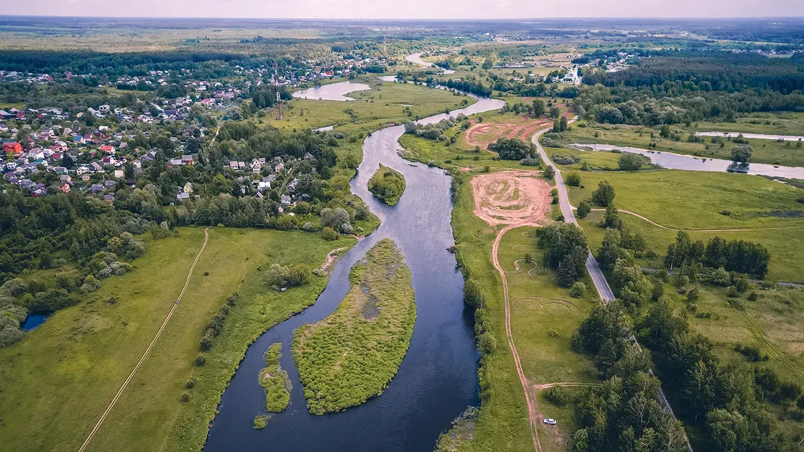

| Павловский Посад Готовы решить ваши жалобы и рекламации |
| Главная | Создать претензию | Контакты | FAQ |
|---|
Добро пожаловатьЭто онлайн-платформа, разработанная для удобного и эффективного решения отзывов и рекламаций жителей города. Сайт предоставляет жителям возможность отправить свои жалобы, предложения и идеи непосредственно городским властям, отслеживать их статус и получать ответы. Узнать больше |
|  |